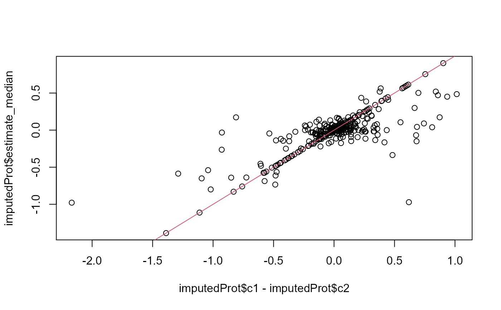

Compute fold changes given Contrasts
Other imputation:
UpSet_interaction_missing_stats(),
get_contrast(),
missigness_histogram(),
missigness_impute_factors_interactions(),
missingness_per_condition_cumsum(),
missingness_per_condition()
bb <- prolfqua_data('data_ionstar')$normalized()
configur <- old2new(bb$config)
data <- bb$data
Contrasts <- c("dilution.b-a" = "dilution.b - dilution.a", "dilution.c-e" = "dilution.c - dilution.e")
mean <- missigness_impute_factors_interactions(data, configur, value = "meanArea" )
#> completing cases
mean <- get_contrast(mean, configur$table$hierarchy_keys(), Contrasts)
#> dilution.b-a=dilution.b - dilution.a
#> dilution.c-e=dilution.c - dilution.e
meanProt <- aggregate_contrast(mean, subject_Id = configur$table$hierarchy_keys_depth())
imputed <- missigness_impute_factors_interactions(data, configur, value = "imputed" )
#> completing cases
imputed <- get_contrast(imputed, configur$table$hierarchy_keys(), Contrasts)
#> dilution.b-a=dilution.b - dilution.a
#> dilution.c-e=dilution.c - dilution.e
imputedProt <- aggregate_contrast(imputed, subject_Id = configur$table$hierarchy_keys_depth())
plot(imputedProt$group_1 - imputedProt$group_2, imputedProt$estimate_median)
abline(c(0,1), col=2, pch = "*")

dim(meanProt)
#> [1] 326 9
sum(is.na(meanProt$estimate_median)) == 0
#> [1] FALSE
sum(is.na(imputedProt$estimate_median)) == 0
#> [1] TRUE
plot(meanProt$estimate_median - imputedProt$estimate_median )